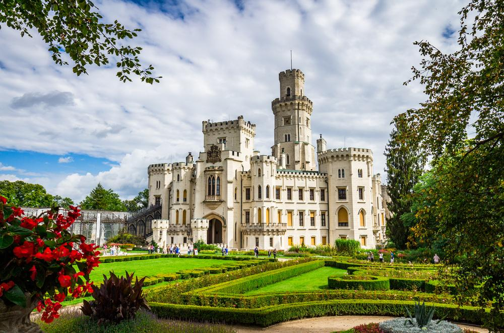
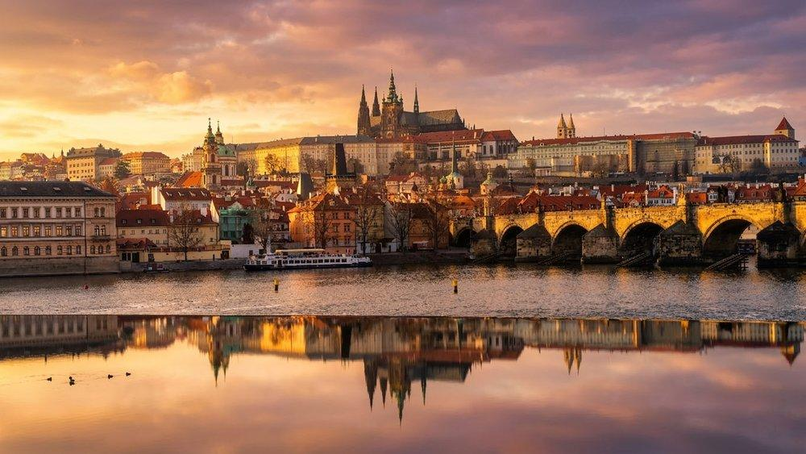
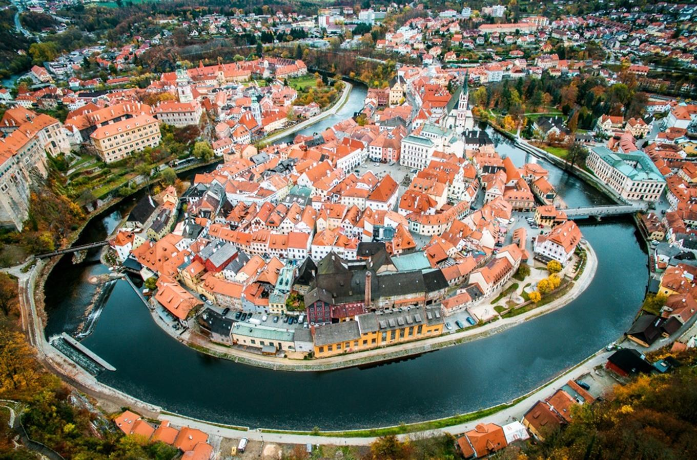
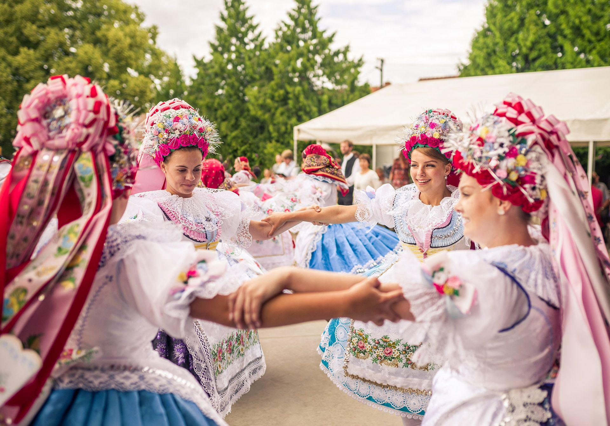
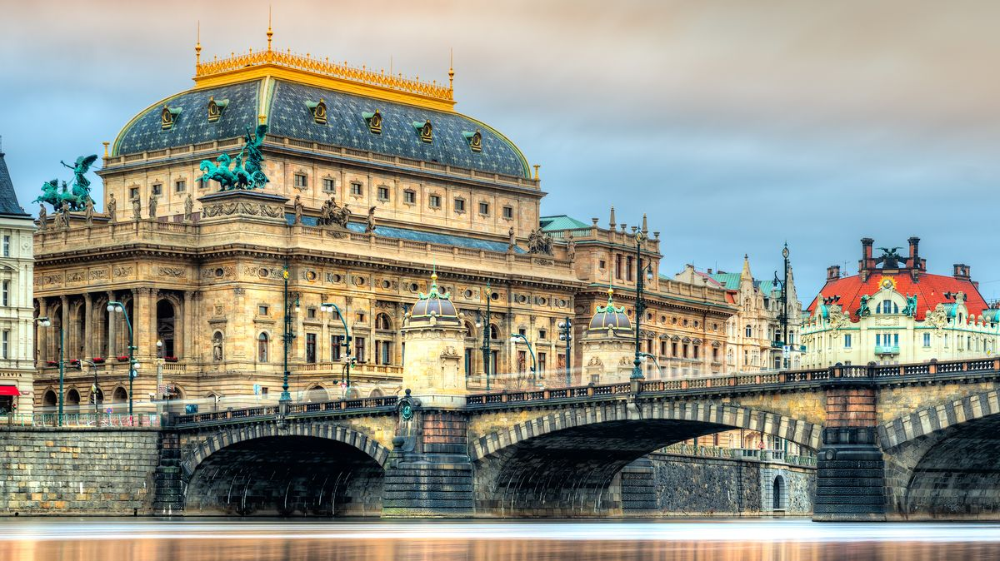
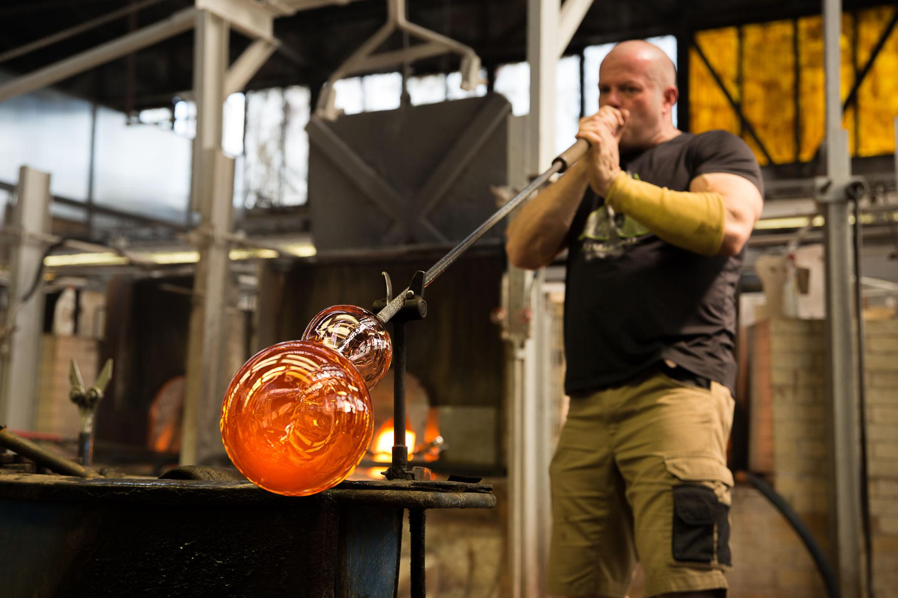
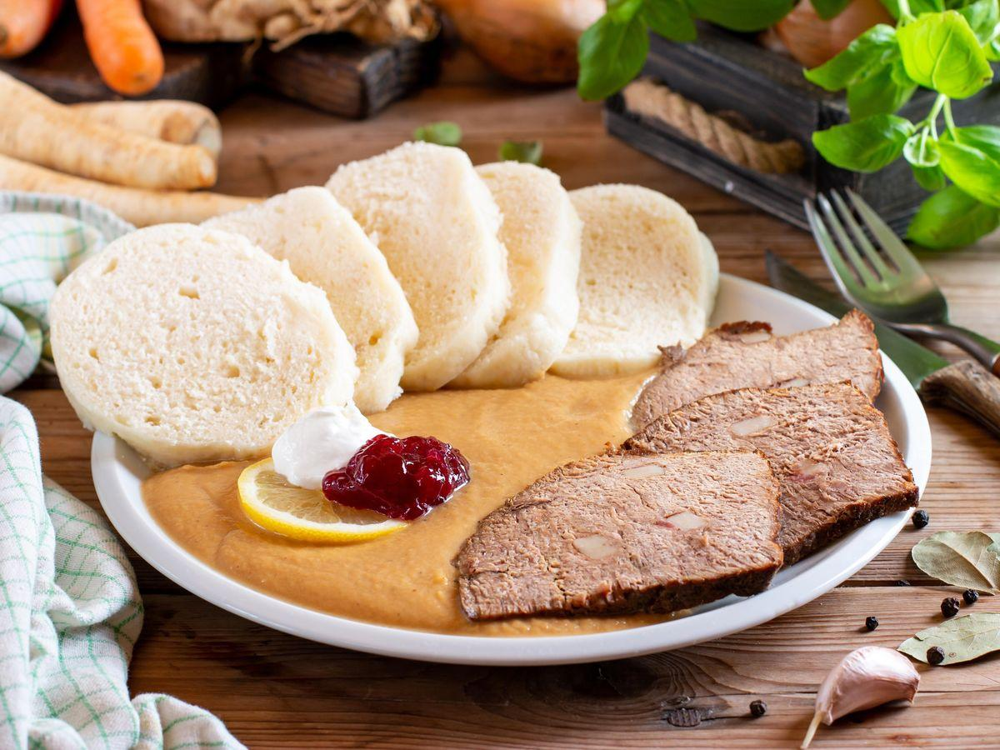

Historic Architecture
Discover magnificent castles, historic towns and architectural masterpieces from different eras.
Explore Architecture
Explore the history, traditions and creativity that make Czech culture unique.
Czech culture is shaped by centuries of history, creativity and traditions. From historic architecture to folk festivals and traditional crafts, every part of Czechia has a story to tell.
Discover the many sides of Czech culture, from historic landmarks to traditions that are still alive today.

Discover magnificent castles, historic towns and architectural masterpieces from different eras.
Explore Architecture
Explore remarkable places and cultural treasures recognised for their outstanding importance.
Explore UNESCO Heritage
Experience colourful folk costumes, traditional dances and celebrations that bring Czech culture to life.
Explore Traditions
Discover famous composers, inspiring artists, historic theatres and contemporary creativity.
Explore Arts & Music
Explore Czech glassmaking, traditional craftsmanship and creative design inspired by generations of skill.
Explore Crafts & Design
Taste traditional Czech dishes, delicious pastries and regional specialities shaped by local traditions.
Explore Czech CuisineDiscover the historical periods that shaped Czech culture, architecture and traditions.
Czech traditions are not just part of history. They continue to bring communities together through festivals, music and celebrations.
Czechia has much more to offer beyond its cultural heritage. Explore its beautiful cities, natural landscapes and unforgettable destinations.